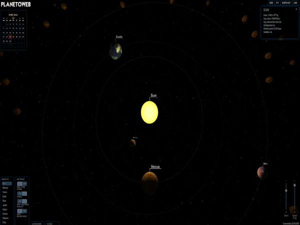
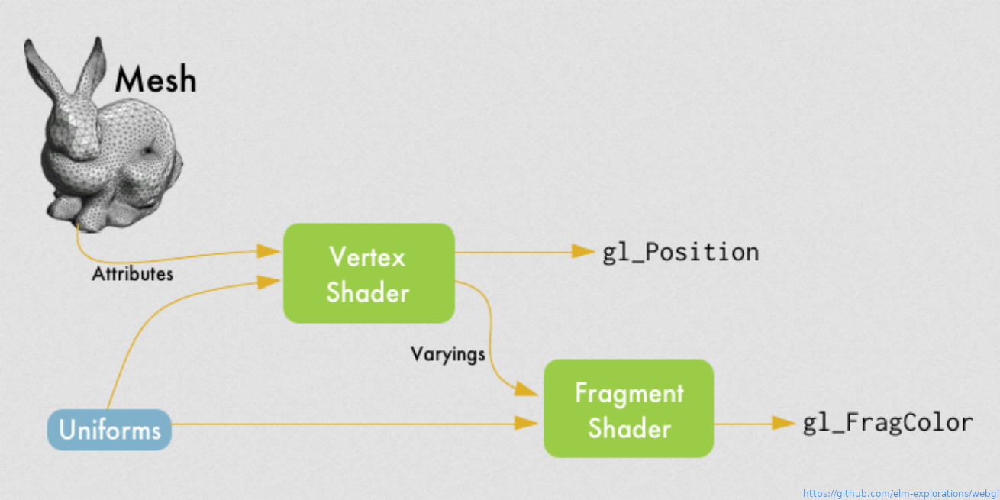
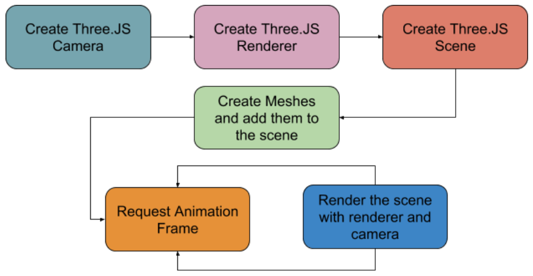

WebGL and Three.js
WebGL - Javascript API for rendering 3D graphics

History of WebGL
- Silicon Graphics, Inc. releases OpenGL 1.0
- OpenGL Architecture Review Board is created to maintain the specification
1992
- OpenGL ES 1.0 released
2003
- OpenGL Architecture Review Board transfers control of OpenGL to Khronos group
- Vladimir Vukicevic starts working on an extension of OpenGL ES - WebGL
2006
- WebGL 1.0 released
2011
- WebGL 2.0 released
2017
WebGL pipeline


Working with WebGL
Vertex shader
#version 300 es
precision mediump float;
in vec3 aVertexPosition;
void main(void) {
gl_Position = vec4(aVertexPosition, 1.0);
}
Fragment shader
#version 300 es
precision mediump float;
out vec4 fragColor;
void main(void) {
fragColor = vec4(0.7, 0.7, 0.5, 1.0);
}
Working with the API using JS
const canvas = document.querySelector('.canvas');
const ctx = canvas.getContext('webgl2');
ctx.clearColor(0, 0, 0, 1.0);
ctx.clear(ctx.COLOR_BUFFER_BIT);
ctx.viewport(0, 0, 0, 0);
const vertices =
[
-0.5, 0.5, 0,
-0.5, -0.5, 0,
0.5, -0.5, 0,
0.5, 0.5, 0
];
const indices = [0, 1, 2, 0, 2, 3];
const vertexBuffer = ctx.createBuffer();
ctx.bindBuffer(ctx.ARRAY_BUFFER, vertexBuffer);
ctx.bufferData(ctx.ARRAY_BUFFER,
new Float32Array(vertices),
ctx.STATIC_DRAW);
const indexBuffer = ctx.createBuffer();
ctx.bindBuffer(ctx.ELEMENT_ARRAY_BUFFER, indexBuffer);
ctx.bufferData(ctx.ELEMENT_ARRAY_BUFFER,
new Uint16Array(indices),
ctx.STATIC_DRAW);
const program = initProgram(
ctx,
vertexShader,
fragmentShader
);
const aVertexPositionAttribute = ctx.getAttribLocation(
program,
'aVertexPosition'
);
ctx.bindBuffer(ctx.ARRAY_BUFFER, vertexBuffer);
ctx.vertexAttribPointer(
aVertexPositionAttribute,
3, ctx.FLOAT, false, 0, 0
);
ctx.enableVertexAttribArray(aVertexPositionAttribute);
ctx.drawElements(
ctx.TRIANGLES,
indices.length,
ctx.UNSIGNED_SHORT,
0);
ctx.bindBuffer(ctx.ARRAY_BUFFER, null);
ctx.bindBuffer(ctx.ELEMENT_ARRAY_BUFFER, null);
Image translation
Image rotation
Image animation in 3D
Browsers supporting WebGL2
- Firefox 51+
- Chrome 56+
- Chrome for Android 64+
- Edge 79+
- Safari 10.1+ (as an experimental feature)
Three.js
Abstracts away some details of WebGL
Three.js pipeline

const renderer = new THREE.WebGLRenderer({ canvas });
const camera = new THREE.PerspectiveCamera(75, 1, 0.1, 5);
camera.position.z = 5;
const scene = new THREE.Scene();
scene.background = new THREE.Color(0x000);
const light = new THREE.DirectionalLight(0xffffff, 1);
light.position.set(-1, 2, 4);
scene.add(light);
const geometry = new THREE.BoxGeometry(1, 1, 1);
const material = new THREE.MeshPhongMaterial(
{ color: 0x44aa88 }
);
const square = new THREE.Mesh(geometry, material);
scene.add(square);
renderer.render(scene, camera);
Three.js animation
Other solutions
Useful links
Examples of using WebGL